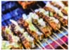

首頁 文章列表
logo MyTeator.
menu
10 Weirdest Taiwanese Food that You Must Try
September 12th, 2020
post image cover
Here is some weird food I believe you should try in Taiwan.
10 Weirdest Taiwanese Food that You Must Try
Before you scroll down and get stunned by the food I’m about to list out, let me point out that Taiwan is a must-visit when you go to Asia. Taiwan is famous for its variety of great food, amazing people, breathtaking nature, and again, food. Part of the Taiwanese night life is the so-called “night market” (夜市) that opens from 6pm to 1am. Make sure you add night market into your schedule, stop by any of them and go on a crazy gourmet experience. Without further ado, let’s jump in.
